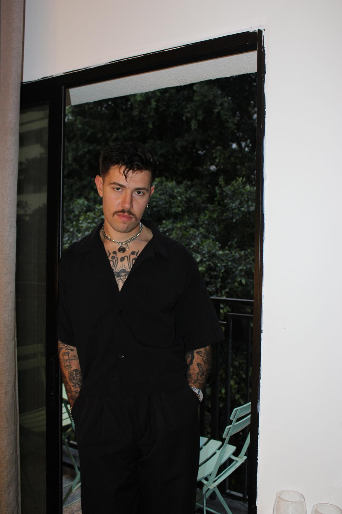

אני לא גורו. אני מישהו שממשיך ללכת.
לא תמיד הייתי האדם שאני היום. במשך שנים חיפשתי תשובות בכל מקום. חשבתי שאם אני אראה טוב יותר, ארגיש טוב יותר. אם אצליח יותר, ארגיש בטוח יותר. אם רק אתקן עוד משהו בעצמי, סוף סוף ארגיש שאני מספיק. אבל כל ניצחון החזיק רגע, ואז הגיע החוסר הבא.
בשלב מסוים הבנתי שלא באמת חיפשתי ביטחון עצמי. חיפשתי קרקע. מישהו שילמד אותי לעמוד על הרגליים גם כשאין מחיאות כפיים, גם כשדוחים אותי, גם כשאני לא יודע מה הצעד הבא.
בהמשך עבדתי בחברה שליוותה גברים בביטחון עצמי ובהיכרות עם נשים. ראיתי מקרוב כמה שינוי חיצוני יכול לפתוח דלתות, וכמה מהר הוא מתפורר בלי בסיס אמיתי מאחוריו. שם נולדה השאלה שלא עזבה אותי: איך בונים אדם, ולא רק תוצאה?
טכניקה יכולה לפתוח דלת, אבל היא לא בונה את מי שעומד מאחוריה. מתוך זה נולדה “בדרך.” לא כדי להיות גורו, ולא כדי למכור פתרונות קסם. אלא כדי להיות מה שהיה חסר לי כשהתחלתי ללכת.
שינוי אמיתי לא מתחיל בדייט מוצלח. הוא מתחיל ברגע שאתה כבר לא צריך להעמיד פנים כדי להרגיש בעל ערך.


בין שתי התמונות האלה לא השתנה רק איך אני נראה — השתנתה הדרך שבה אני רואה את עצמי ואת העולם. לא ברגע אחד גדול, אלא דרך בחירות קטנות, טעויות, נפילות ותנועה קדימה.